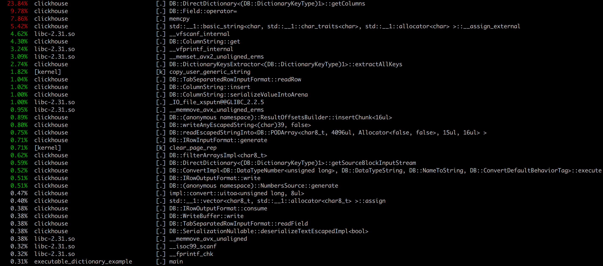

Maksim, developer of ClickHouse.
Syntax
CREATE FUNCTION name AS (parameter0,...) ->
expression
1. Recursive functions are not allowed.
2. All identifiers used by a function must be specified in its parameter list.
3. The name of a function must be unique among user defined and system functions.
CREATE FUNCTION contains AS (string, value) ->
position(string, value) > 0;
SELECT contains('Test', 'T') AS result
┌─result─┐
│ 1 │
└────────┘
Stored in configuration_path/user_defined folder as SQL script
CREATE FUNCTION a_plus_b AS (a, b) -> a + b;
cat ../user_defined/function_a_plus_b.sql
CREATE FUNCTION a_plus_b AS (a, b) -> (a + b)
CREATE FUNCTION a_plus_b AS (a, b) -> a + b;
SELECT name, create_query FROM system.functions
WHERE origin = 'SQLUserDefined'
┌─name─────┬─create_query──────────────────────────────────┐
│ a_plus_b │ CREATE FUNCTION a_plus_b AS (a, b) -> (a + b) │
└──────────┴───────────────────────────────────────────────
SQL UDF is syntax level optimization
SELECT a_plus_b(a, b) + c FROM test_table
WHERE b + c > 5;
Translated into:
SELECT a + b + c FROM test_table WHERE b + c > 5;
Optimizations will apply:
1. JIT Compilation.
2. Common subexpression elimination.
1. Run child process and execute script.
2. Sending data to its stdin using pipe, reading result from stdout.
3. Data is serialized and deserialized using native formats (TabSeparated, ...).
Example:
#!/bin/bash
while read read_data;
do printf "Key $read_data\n";
done
Example:
#!/usr/bin/python3
import sys
if __name__ == '__main__':
for line in sys.stdin:
print("Key " + line, end='')
Example. Option send_chunk_header is true:
int main(int argc, char **argv)
{
char value[4096]; size_t rows = 0;
std::cin.tie(nullptr); std::cin.sync_with_stdio(false);
std::cout.tie(nullptr); std::cout.sync_with_stdio(false);
while (std::cin >> rows) {
for (size_t i = 0; i < rows; ++i) {
std::cin >> value;
std::cout << "Key " << value << "\n";
}
std::cout.flush();
}
return 0;
}
Example:
<dictionary>
<name>executable_dictionary</name>
<source>
<executable>
<format>TabSeparated</format>
<command>user_scripts/script_name</command>
</executable>
</source>
<layout><complex_key_direct/></layout>
<structure>
<key>
<attribute><name>key</name><type>String</type></attribute>
</key>
<attribute><name>result</name><type>String</type>>/attribute>
</structure>
</dictionary>
SELECT dictGet('executable_dictionary', 'result', '1')
as result
┌─result─┐
│ Key 1 │
└────────┘
clickhouse-benchmark --query="SELECT
dictGet('dictionary', 'result', toString(number))
FROM system.numbers LIMIT 1000000 FORMAT Null"
--concurrency=3
| Dictionary executable Bash: | 16.112 MiB/s |
| Dictionary executable Python: | 196.691 MiB/s |
| Dictionary executable C++: | 264.827 MiB/s |
ClickHouse process data in blocks.
Overhead of script creation (fork + exec) on each block of data is significant.
Script can have state, that need to be created on startup.
Solution:
Executable Pool. Create pool of running processes and reuse them during queries.
1. Pool size. If pool size == 0 then there is no size restrictions.
2. Command termination timeout. Default 10 seconds.
<source>
<executable_pool>
<format>TabSeparated</format>
<command>user_scripts/test_input.sh</command>
<pool_size>16</pool_size>
<send_chunk_header>1<send_chunk_header>
</executable_pool>
</source>
clickhouse-benchmark --query="SELECT
dictGet('dictionary', 'result', toString(number))
FROM system.numbers LIMIT 1000000 FORMAT Null"
--concurrency=32
| Dictionary executable C++: | 264.827 MiB/s |
| Dictionary executable pool C++: | 305 MiB/s |
305 MB/s is too slow. Just for copying data beetween processes.
Executable, ExecutablePool dictionaries.
Executable, ExecutablePool engines. Executable table function.
Executable user defined functions.
Syntax:
executable(script_name_optional_arguments,
format,
structure,
input_queries)
Data is processed in streaming fashion.
ClickHouse process input queries and sending their results into process stdin. And simualteneosly read data from process stdout.
If more than one input query is created clickhouse creates pipes for file descriptors starting from 3.
SELECT * FROM executable('test_input.sh',
'TabSeparated',
(SELECT 1))
┌─value─┐
│ Key 1 │
└───────┘
CREATE TABLE test_table (value String)
ENGINE=Executable('test_input.sh',
'TabSeparated',
(SELECT 1));
SELECT * FROM test_table;
┌─value─┐
│ Key 1 │
└───────┘
CREATE TABLE test_table (value String)
ENGINE=ExecutablePool('test_input.sh',
'TabSeparated',
(SELECT 1));
SELECT * FROM test_table;
┌─value─┐
│ Key 1 │
└───────┘
#!/usr/bin/python3
import sys
from essential_generators import DocumentGenerator
if __name__ == '__main__':
length = int(sys.argv[1]);
gen = DocumentGenerator()
for i in range(0, length):
print(gen.sentence())
SELECT
length(tokens(sentence)) AS token_length,
length(sentence)
FROM executable('sentence_generator.py 10000',
'TabSeparated',
'sentence String')
ORDER BY token_length DESC LIMIT 5;
┌─token_length─┬─length(sentence)─┐
│ 22 │ 116 │
│ 21 │ 110 │
│ 20 │ 109 │
│ 20 │ 85 │
│ 19 │ 112 │
└──────────────┴──────────────────┘
<function>
<type>executable/executable_pool</type>
<name>test_function</name>
<return_type>String</return_type>
<argument>
<type>String</type>
</argument>
<format>TabSeparated</format>
<command>user_scripts/test_input.sh</command>
</function>
SELECT test_function('1')
┌─test_function('1')─┐
│ Key 1 │
└────────────────────┘
SELECT name FROM system.functions
WHERE origin = 'ExecutableUserDefined'
┌─name──────────┐
│ test_function │
└───────────────┘
./clickhouse-benchmark
--query="SELECT test_func(toString(number))
FROM system.numbers LIMIT 100000 FORMAT Null"
--concurrency=32
| ClickHouse concat('Key', toString(number)): | MiB/s: 3829.216 |
| Function Bash: | MiB/s: 20.964 |
| Function Python: | MiB/s: 174.635 |
| Function executable C++: | MiB/s: 574.620 |
| Function executable pool C++: | MiB/s: 859.483 |
ReadBufferFromFileDescriptor read_buffer(0);
WriteBufferFromFileDescriptor write_buffer(1);
size_t rows = 0;
char dummy;
while (!read_buffer.eof()) {
readIntText(rows, read_buffer);
readChar(dummy, read_buffer);
for (size_t i = 0; i < rows; ++i) {
readString(buffer, read_buffer);
readChar(dummy, read_buffer);
writeString("Key ", write_buffer);
writeString(buffer, write_buffer);
writeChar('\n', write_buffer);
}
write_buffer.next();
}
./clickhouse-benchmark
--query="SELECT test_func(toString(number))
FROM system.numbers LIMIT 100000 FORMAT Null"
--concurrency=32
| ClickHouse concat('Key', toString(number)): | MiB/s: 3829.216 |
| Function executable pool C++: | MiB/s: 859.483 |
| Function executable pool C++ ClickHouse buffers: | MiB/s: 1124.672 |
#!/usr/bin/python3
import sys
import nltk
from nltk.sentiment import SentimentIntensityAnalyzer
if __name__ == '__main__':
sentiment_analyzer = SentimentIntensityAnalyzer()
# Read chunk length
for number in sys.stdin:
length = int(number)
# Read lines from chunk
for _ in range(0, length):
line = sys.stdin.readline()
score = sentiment_analyzer.polarity_scores(line)
print(str(score['compound']) + '\n', end='')
# Flush results to stdout
sys.stdout.flush()
<function>
<type>executable_pool</type>
<name>sentenceScore</name>
<return_type>Double</return_type>
<argument>
<type>String</type>
</argument>
<format>TabSeparated</format>
<command>user_scripts/sentence_analyzer</command>
<send_chunk_header>1</send_chunk_header>
</function>
SELECT sentenceScore('ClickHouse is fast') as score
┌─score─┐
│ 0 │
└───────┘
SELECT avg(sentenceScore(sentence)) AS avg_sentence_score
FROM executable('sentence_generator.py 10000',
'TabSeparated',
'sentence String')
┌────────────avg_score─┐
│ 0.030663238759543694 │
└──────────────────────┘